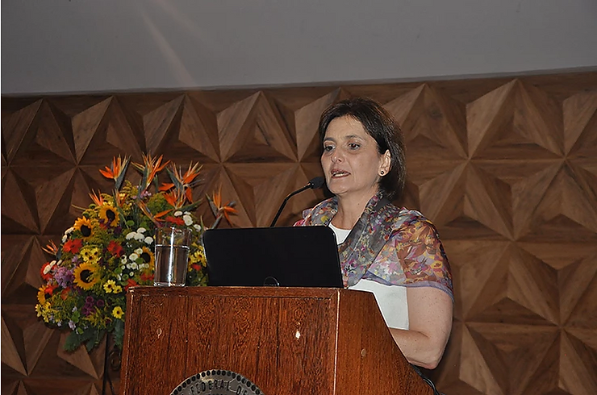
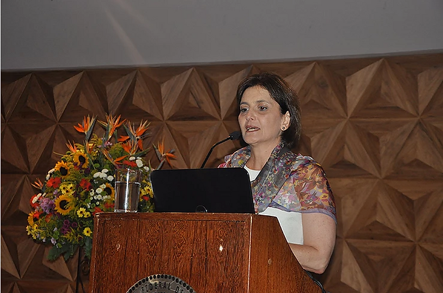

A ABRAPESP (Associação Brasileira de Psicologia do Esporte) participou do IX Congresso Internacional e XVI Congresso Brasileiro de Psicologia do Esporte, compondo a mesa temática do dia 14/04/2016: Personalidades de Atletas Brasileiros.

A atual vice-presidente Profa. Dra. Gislane Ferreira Melo apresentou o cenário nacional referente ao percentual de atletas e pós-atletas femininas com formação universitária. A ex-presidente da ABRAPESP, membro do Conselho Federal de Psicologia e Psicóloga do Esporte Profa. Dra. Luciana Ângelo, questionou as verdadeiras oportunidades de escolhas que o atleta pode fazer ao longo de toda a sua carreira. A última apresentação da mesa redonda foi da fundadora e ex-presidente da ABRAPESP, Profa. Dra. Kátia Rúbio, que discutiu o tema a partir de um caso marcante de como se dá a trajetória olímpica de um atleta nacional. Kátia Rúbio é pesquisadora dos atletas olímpicos brasileiros pela Universidade de São Paulo.
A mesa contou com a moderação da presidente do Conselho Federal de Psicologia, Profa. Dra. Marisa Monteiro Borges.